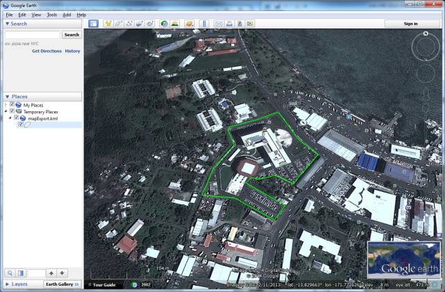

The Export to KML Tool can be used to export the currently
selected feature of the map into a basic format KML file. That KML file can then be loaded
into Google Earth and displayed.
Export to KML Tool can be used to export the currently
selected feature of the map into a basic format KML file. That KML file can then be loaded
into Google Earth and displayed.
Before exporting, you should use the Map Find to locate and select a feature and then
click in the Map toolbar. This will export map data from the
selection layer using longitude and latitude coordinates into a file called
mapExport.kml in your <user_home>/sola/ directory. If you have
Google Earth installed, double click the file to launch Google Earth and show the feature
super-imposed on Google Earth map. Note that you can also use Google Earth to change the
styling for the feature.
in the Map toolbar. This will export map data from the
selection layer using longitude and latitude coordinates into a file called
mapExport.kml in your <user_home>/sola/ directory. If you have
Google Earth installed, double click the file to launch Google Earth and show the feature
super-imposed on Google Earth map. Note that you can also use Google Earth to change the
styling for the feature.
Note that this tool is only available to users that have the Export Map security role.

KML Export displayed in Google Earth